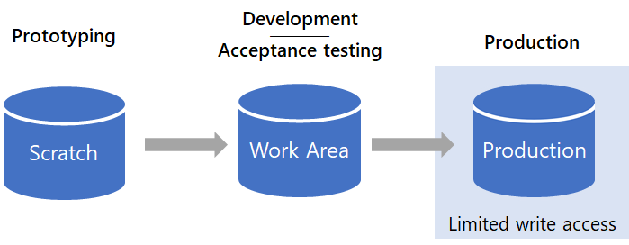
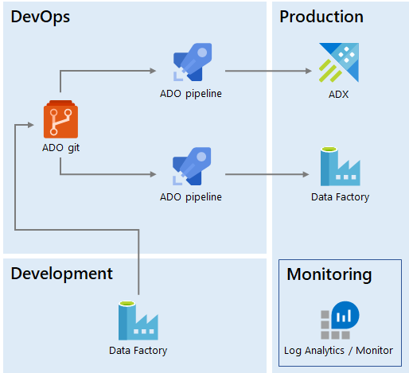

Self-Serve Analytics
This is a cross-post of the article I wrote for Data Science @ Microsoft, How we built self-serve data environment tools with Azure. Many thanks to my colleague Casey Doyle for editing this into good shape.
Our team not only helps the engineering org build Azure - we use it, too, in our data science work. Our team consists of program managers, data scientists, and data engineers. In this post I describe how our data engineering team developed a scalable, self-serve analytics platform for our data science organization.
We maintain a big data platform with all the required data points to view and understand the Azure business. While we work with multiple data fabrics (such as Azure SQL and Azure Data Lake Storage), our main storage solution is Azure Data Explorer (ADX). We use ADX for several reasons, but two key ones involve the scale of the data we are dealing with and the exploratory nature of the work our data scientists are doing. ADX excels at quickly running queries across huge volumes of data.
Reproducibility
When we were a small team, data scientists produced ad hoc reports and analyses, building queries and running them from their own machines. This worked for a while, but soon we hit issues of reproducibility: If a set of queries exists only on one person's machine and that person goes on vacation, nobody else on the team can reproduce their work.
Of course, this is a well known issue in the software engineering world,
with an industry-standard solution: Source control. As a first step, we
asked everyone on the team to use Git to store their ADX scripts. This
not only enabled capturing canonical
queries in a public repository,
it also allowed us to adopt other good practices such as mandatory code
reviews.
Bringing engineering best practices to analytics was the first step toward a reliable analytics platform.
Environments
Another problem we ran into was around the interdependencies among various data sets. Some reports or metrics took dependencies on the output of other metrics. But consider a situation in which the dependent metric consists of one-off exploratory output, while the other is a monthly report. Without a systematic way of keeping track of what depends on what, things start to look like Jenga - maybe a critical piece of an important artifact disappears because the original author didn't realize anyone cared about it.
To solve this problem, we split our ADX cluster into three different environments: Scratch, Work Area, and Production.

Changes flow from Scratch to Work Area to Production. Production is read-only for everyone except engineering.
Scratch is an area open to everyone on the team to do anything they want, with one important rule: No production dependencies are allowed. Scratch is used for prototyping, proof-of-concepts, and other exploratory work. To enforce this, we set a 30-day retention policy. This ensures that nothing beyond prototypes exists there. Only our team has access to this area.
Work Area is the place data scientists use once they are done prototyping and have a good idea of what they need to do next. They still have full access to Work Area but unlike Scratch, data scientists can share work-in-progress with external stakeholders for user acceptance testing. If the artifact is a one-time analysis, it stops here. If it is recurring, for example a monthly report, it graduates to Production.
Production is a locked down environment and only a few data engineers have Write access to it. This is the equivalent of a production services environment, where access is restricted such that nobody can accidentally cause an impact to a live application. In our case, nobody can accidentally modify a recurring report or key metric others depend on.
Moving work from Scratch to Work Area to Production ensures dependencies can only flow in one direction (Scratch can depend on something in Production, but not vice versa). Quality gates like mandatory code reviews ensure that whatever makes it to Production meets a high quality bar.
We also created explicit guidelines for what should go into Production:
Queries should be packaged into functions, tables and functions should
be created with .create-or-alter, and so on.
Self-Serve
Because the Production environment is restricted to data engineers, graduating something to Production first involved a hand-off process: A data scientist would have to ask the data engineering team to create or update an entity in the Production environment. This usually meant creating a work item that had to be prioritized against others.
Our data engineering team is much smaller than our data science organization (we have about one engineer for every five data scientists), and so this approach didn't scale very well. To optimize this, we invested in enabling a self-serve model.
We created an Azure DevOps release pipeline that uses the ADX Task to execute ADX scripts in the git repo against the Production database. We release from the master branch, but in order for a new script to make it to master, it must be submitted as a pull request and code review signoff is required from a member of the engineering team.
With this model, data scientists send a pull request and, once reviewed by a maintainer of the Production environment, it is automatically merged and deployed. In contrast to the original hand-off process (via work items), engineering involvement can be as simple as approving a pull request. The code review process still ensures that the engineers who operate the Production environment have a say in what makes it into that environment and can always request changes to scripts if they believe, for example, a query can be further optimized.
Data Movement
Similar to the analytics needs described above, we needed to orchestrate data movement. This includes copying data from external sources into our ADX cluster and running functions on a schedule to produce reports.
Production data movement was originally operated by the engineering team, and so requests again used to come in the form of work items to be prioritized and scheduled. But because our data scientists are familiar with Azure Data Factory (ADF) and use it for data movement in the Work Area environment, we realized we could enable self-serve capabilities for data movement too, by leveraging the ADF continuous integration and delivery setup. This way, scientists can create ADF pipelines and submit pull requests that engineers deploy to production.
We are using Azure Monitor integrated with IcM, the company-wide incident management system, to monitor the production pipelines. Azure Monitor integrates natively with ADF. Our support model entails the engineering team looking at tickets generated by pipeline failures, which are then restarted to recover from transient issues. In case of persistent failures, we involve the original pipeline authors to help debug. This way, the engineering team operates all Production data movement without having full ownership of the pipelines.

We deploy both Kusto objects and Data Factory pipelines from ADO git using ADO pipelines. The Production environment is operated by engineering.
Data Contracts
But there is still more to it than just deploying and monitoring ADF pipelines: Bringing external data into the production area of our cluster means taking an upstream dependency on that data. There are several properties to be defined for such a dependency, including things like the service level agreement (SLA) with the upstream provider and the data classification, which ensures our system stays compliant. The topic of maintaining compliance in a big data platform deserves an article by itself, so I won't go into details in this one. The key point is that in this case, self-serve is not enough - we also need data contracts.
A data contract specifies all the details of a dependency, whether upstream or downstream of our platform. As part of the quality gates for pull requests, we thoroughly review proposed pipelines and in general we don't allow new connectors to be added with this model. A new connector implies a new dependency, so before deploying to production we need to ensure we have a contract in place and that the connector uses the production service principles the engineering team is maintaining.
Summary
In this article we reviewed several of the infrastructure and processes built by our data engineering team:
- We brought engineering rigor to our analytics through source control, code reviews, and automated deployment.
- We enabled self-serve by leveraging Azure DevOps.
- We similarly enabled self-serve for data movement using ADF CI/CD.
- We have processes in place to ensure our data is compliant and that production dependencies are properly documented.
More importantly, we achieved all of the above without maintaining any custom application code: Our entire solution is built on Azure PaaS services, which frees up our engineering team to tackle other challenges, ones we will discuss in future articles.